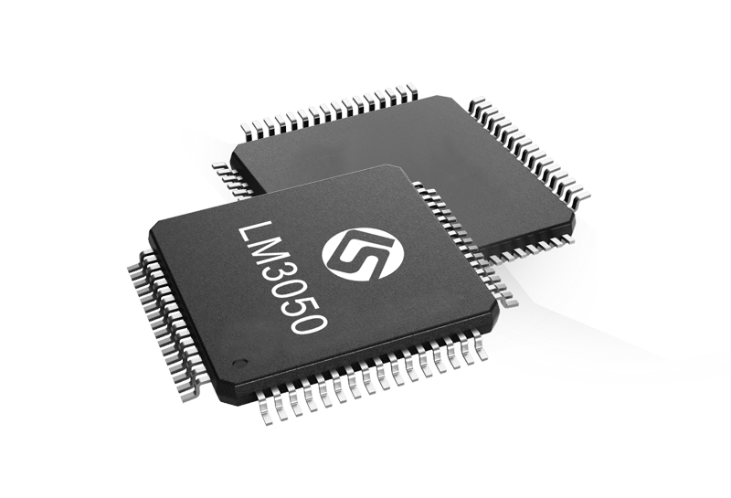
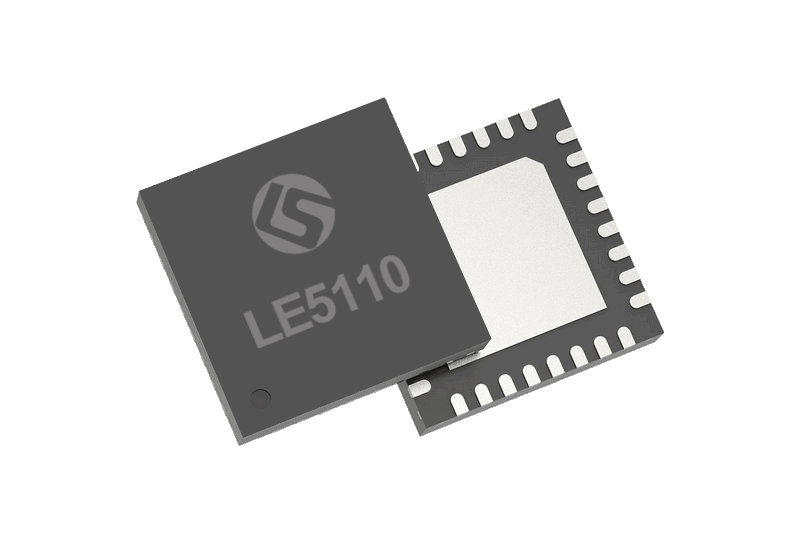
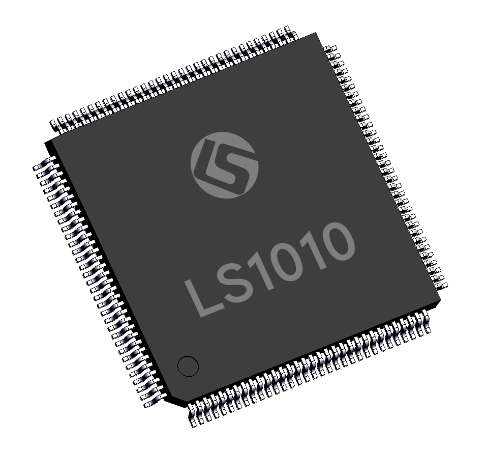

PRODUCT PORTFOLIO
产品中心
从微控制器、低功耗无线连接，到计算平台管理。
依据应用需求，探索凌思微芯片产品与选型资料。

MCUMCU / LINKEDSEMI
LM3050 ↗
LM3x 高性能通用微控制器
128 MHz128 KB SRAM
 MCU
MCUMCU / LINKEDSEMI
LM6050 ↗
LM6x RISC-V 工业级增强型微控制器
144 MHzCAN-FD
BLE
BLE / LINKEDSEMI
LE5010 ↗
低功耗蓝牙 SoC · BLE 5.0
64 MHz512 / 1024 KB Flash

BLEBLE / LINKEDSEMI
LE5110 ↗
工业级蓝牙 SoC · BLE 5.1
64 MHzAoA / AoD
 BLE
BLEBLE / LINKEDSEMI
LE5030 ↗
蓝牙触摸 SoC · 14 通道 TK
64 MHz14 通道 TK

ECEC / LINKEDSEMI
LS101x ↗
国产 32 位 RISC-V 嵌入式控制器
144 MHz128 KB SRAM
 SIO
SIOSIO / LINKEDSEMI
LS601x ↗
面向台式机与服务器的 Super I/O
eSPI / LPCACPI
未找到匹配产品，请更换关键词或分类。
PRODUCT SELECTION
具体订货型号
系列能力与型号配置分别展示。下表基于官方公开型号信息整理，点击型号查看完整参数。
MCULM6050CIDLM6050 系列↗MCULM6050DIDLM6050 系列↗MCULM6050EIDLM6050 系列↗MCULM6050IIDLM6050 系列↗MCULM6050JIDLM6050 系列↗BLELE5010AILE5010 系列↗BLELE5010BILE5010 系列↗BLELE5010SILE5010 系列↗BLELE5010TILE5010 系列↗BLELE5010AJLE5010 系列↗BLELE5010AIELE5010 系列↗BLELE5010BIELE5010 系列↗BLELE5110AILE5110 系列↗BLELE5110BILE5110 系列↗BLELE5030BILE5030 系列↗ECLS1010EIDLS101x 系列↗ECLS1011EIDLS101x 系列↗ECLS1011GIDLS101x 系列↗ECLS1016EIDLS101x 系列↗ECLS1017EIDLS101x 系列↗ECLS1017GIDLS101x 系列↗SIOLS6010FICLS601x 系列↗SIOLS6011EIDLS601x 系列↗
LM3050 公开页未提供完整订货后缀型号表，可通过官方手册与销售团队获取选型信息。